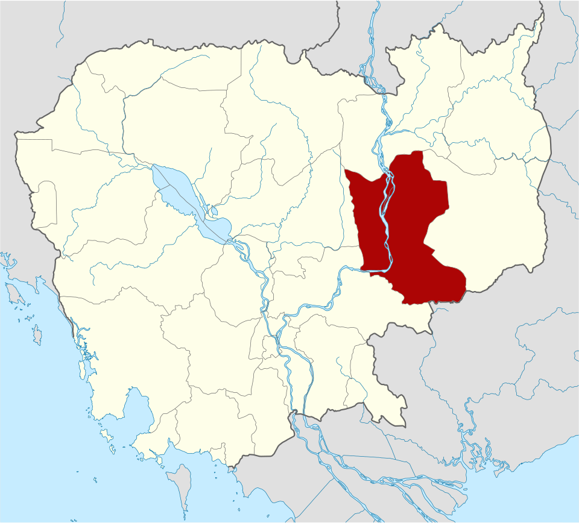
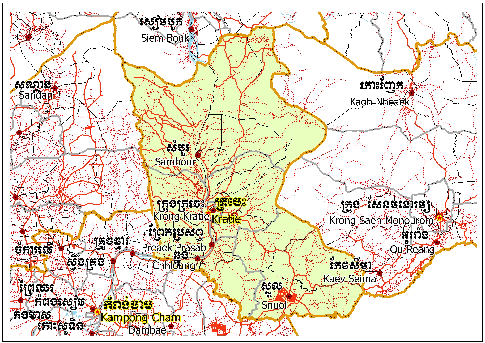
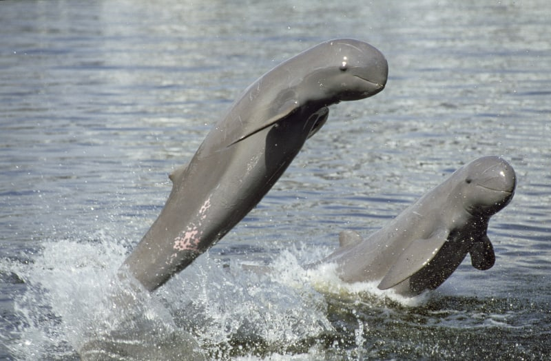

ខេត្តក្រចេះ
ក្រចេះ គឺជាខេត្តមួយក្នុងប្រទេសកម្ពុជា។ ក្រុងរបស់ខេត្តមានឈ្មោះថាក្រចេះដែលជាទីរួមខេត្ត។ ក្រចេះគឺជាខេត្តតូចមួយតែគួរឲ្យចាប់ចិត្តសិ្ថតនៅប៉ែកឦសាននៃរាជធានីភំ្នពេញ។ វាមានព្រំប្រទល់ជាប់នឹងស្ទឹងត្រែងនៅភាគខាងជើង មណ្ឌលគីរីនៅខាងកើត កំពង់ធំ និង កំពង់ចាមនៅខាងលិច ហើយត្បូងឃ្មុំ និងវៀតណាមនៅខាងត្បូង។ មានផ្លូវគមនាគមន៍តភ្ជាប់ ៣ខែ្ស គឺផ្លូវជាតិលេខ៧ ចម្ងាយ ៣៤0 គីឡូម៉ែត្រ ផ្លូវលំក្រាលក្រួសក្រហម កាត់ស្រុកតំបែរ-ស្រុកឆ្លូង មួយខែ្សនិងតាមមាត់ទនេ្លមួយខែ្សទៀត មានចម្ងាយប្រហាក់ប្រហែល នឹងផ្លូវទឹកទនេ្លមេគង្គ ២២០ គីឡូម៉ែត្រ។ ការធ្វើដំណើរ ទោះបីតាមរថយន្តកី្តតាមកាណូតលឿនកី្តមិនលើសពី៥ម៉ោងទេ ពិតជាបានមកដល់ក្រុងក្រចេះដោយសុវតិ្ថភាព។ ខេត្តក្រចេះ សម្បូរដោយធនធានធម្មជាតិ នៅលើដី មានព្រៃព្រឹក្សា វាលស្រែ ដីមានជីជាតិ នៅក្នុងទឹកសម្បូរដោយត្រី ពិសេសមេពូជត្រីធំៗ នៅតាមអន្លង់មេគង្គក្នុងស្រុកសំបូរ និងមានសត្វផ្សោតទឹកសាប ដែលទាក់ទាញភ្ញៀវ ទេសចរជាតិ និងអន្តរជាតិ។ ក្រៅពីនេះ នៅមានទេសភាពដ៏ស្រស់សោភ័ណ ថៃ្ងលិចគងព្រៃកោះទ្រង់ដ៏ស្អាត គួរឱ្យចង់ទស្សនាទៀតផង។ ទាំងអស់ដែលបានបរិយាយចោះៗ ខាងលើ ធ្វើឲ្យខេត្តក្រចេះមានកំណើនភ្ញៀវទេសចរណ៍ទេ្វដងក្នុង មួយឆ្នាំៗ។ កត្តាទាំងនេះបាន ចង្អុលឲ្យខេត្តក្រចេះជ្រើសរើសយក វិស័យទេសចរណ៍ជាវិស័យអាទិភាពក្នុងកិច្ចការស្តារ និងអភិវឌ្ឍសេដ្ឋកិច្ច ទោះតាមរយៈចំណូលដោយផ្ទាល់កី្ត ដោយប្រយោលកី្ត ក៏វិស័យទេសចរណ៍បានកំពុងជំរុញយ៉ាងស្វាហាប់ ដើម្បីធ្វើជាឧបករណ៍វិជ្ជមានមួយក្នុងការកាត់បន្ថយភាពក្រីក្រ បង្កើនការងារសម្រាប់ប្រជាពលរដ្ឋជាង ២៨ម៉ឺននាក់ នៅខេត្តក្រចេះ។

លក្ខណៈភូមិសាស្ត្រ
ខេត្តក្រចេះស្ថិតនៅតំបន់ខ្ពង់រាបប៉ែកឦសាននៃ ប្រទេសកម្ពុជា សំបូរទៅដោយសម្បត្តិវប្បធម៌ប្រវត្តិសាស្រ្ត និងធម្មជាតិជាច្រើន ដែលទាក់ទាញចំណាប់អារម្មណ៍ ភ្ញៀវជាតិ និងអន្តរជាតិអោយមក ទស្សនាកំសាន្ត និងសិក្សាស្រាវជ្រាវ ដើម្បីបាន ឃើញបានយល់ និងបានស្គាល់ពីទិដ្ឋភាពពិតនៃ សម្បតិ្តទាំងនោះដោយខានពុំបាន។ ក្រៅអំពី លទ្ធភាពខាងផែ្នកទេសចរណ៍ខេត្តក្រចេះអាចផ្តល់ លទ្ធភាពលើវិស័យផេ្សងៗទៀតជាច្រើន ដូចជាវិស័យសេដ្ឋកិច្ច សង្គមកិច្ច វប្បធម៌ និងអរិយធម៌ ដែលជាកេរ្តិ៍ដំណែលពីដូនតារបស់ខែ្មរបានបន្សល់ទុក អោយយ៉ាងច្រើនសន្ធឹកសន្ធាប់ដល់កូនចៅជំនាន់ក្រោយផងដែរ។ ក្រចេះក្រុងជាទីប្រជុំជនតូចប៉ុនែ្តស្អាតលំអទៅ ដោយអាគារស្ថាបនាតាំងពីទសវត្ស ១៩៤០-១៩៥០ និង១៩៦០ ដែលមាន រចនាបថល្អប្រណិត។ នៅគ្រប់ទីកនែ្លង ក្នុងខេត្តប្រកបដោយ ធម្មជាតិពិតដ៏សែនមនោរម្យ នៅខាងមុខមានដងទនេ្ល និងកោះនៅខាងក្រោយមានបឹង ដ៏ធំ ដែលមានជំនោរបរិសុទ្ធ។ អ្នកដែលបានមកដល់ខេត្តក្រចេះ ជាលើកដំបូងប្រាកដជាមានអារម្មណ៏ សប្បាយរីករាយ នឹងបានគយគន់ទេសភាព ហើយនិងស្រូបខ្យល់រំភើយៗនាពេលរសៀលថៃ្ងរៀបលិច ដ៏ស្រស់ត្រកាល។ ខេត្តក្រចេះមាន សត្វផ្សោតទឹកសាបដែលជាប្រភេទសត្វដ៏កម្រក្នុងពិភពលោកក៏ដូចជាក្នុងតំបន់ និងសំបូរទៅដោយរមណីយដ្ឋានបែប ប្រវត្តិសាស្រ្តនិងធម្មជាតិដ៏ប្រពៃ ដែលមានការទាក់ទាញការចាប់អារម្មណ៏ពី គ្រប់មជ្ឈដ្ឋានទាំងក្នុងនិងក្រៅប្រទេស និងមាន សារៈសំខាន់សំរាប់អ្នកសិក្សាស្រាវជ្រាវសែ្វងយល់។ លើសពីនេះខេត្តក្រចេះមានជនជាតិដើម ភាគតិចរស់នៅចំនួន៧ ជនជាតិដូចជា ព្នង ស្ទៀង គួយ ខោញ មិល ក្រោល ថ្មូន។ ខេត្តមានរមណីយដ្ឋានចំនួន ១៣ កនែ្លង ក្នុងនោះមានរមណីយដ្ឋាន វប្បធម៌ប្រវត្តិសាស្រ្តចំនួន ៦ កនែ្លង និងរមណីយដ្ឋានធម្មជាតិចំនួន ៧ កនែ្លង។ ការធ្វើដំណើរតាមផ្លូវជាតិលេខ៧ ដែលមានចម្ងាយ ៣៤០ គ.ម. មានភាពងាយស្រួលគ្រប់រដូវកាលដោយបច្ចុប្បន្នផ្លូវជាតិត្រូវបានក្រាលកៅស៊ូរួចរាល់ហើយអ្នកទេសចរណ៍អាចធ្វើដំណើរ មកកាន់ខេត្តក្រចេះតាមមធ្យោបាយផ្ទាល់ខ្លួន រថយន្តតាក់ស៊ី រថយន្តក្រុង អ្នកទេសចរណ៍ក៏អាចធ្វើដំណើរតាមទនេ្លមេគង្គដែលមានចម្ងាយ ២២០ គម. ដោយប្រើមធ្យោបាយនាវាលឿន អ្នកធ្វើដំណើរអាចគយគន់ទេសភាពតាមដងទនេ្ល។ ការធ្វើដំណើរតាមផ្លូវអាកាសពុំទាន់អាចប្រព្រឹត្ត ទៅបាននៅឡើយដោយសារ អាកាសយាន្តដ្ឋានពុំទាន់បានកែលំអនិងពុំទាន់មានជើងហោះហើរនៅឡើយ។ លើសពីនេះភ្ញៀវទេសចរណ៍អាចបន្តដំណើរ ទៅកាន់ខេត្តស្ទឹងត្រែង រតនគិរី មណ្ឌលគិរី និងទៅប្រទេសជិតខាងដូចជា ប្រទេសលាវ និង វៀតណាម។
.jpg)

រដ្ឋបាល
ខេត្តក្រចេះ រួមមាន ៧ ស្រុក-ក្រុង ៖ ឃុំ
- ស្រុកឆ្លូង
- ស្រុកអូរគ្រៀងសែនជ័យ
- ស្រុកចិត្របុរី
- ស្រុកសំបូរ
- ស្រុកព្រែកប្រសព្វ
- ស្រុកស្នួល
- ក្រុងក្រចេះ
តំបន់ទេសចរណ៍
អន្លង់ផ្សោតកាំពី«អន្លង់ផ្សោតកាំពី» ជារមណីយដ្ឋានទេសចរណ៍ធម្មជាតិនៅទន្លេមេគង្គលើ ខេត្តក្រចេះ។ ទេសចរ អាចជិះទូកទស្សនាសត្វផ្សោតអណ្ដែតខ្លួនទាំងគូៗ ហាក់ដូចម្ដាយនិងកូន, បង និងប្អូន កំពុងប្រឡែងគ្នាលើផ្ទៃទឹក។ដើម្បីទៅកាន់ទីតាំងមួយនេះ អ្នកទេសចរត្រូវធ្វើដំណើរចេញពីក្រុងក្រចេះ ឆ្ពោះទៅកាន់ភូមិកាំពីឃុំសំបុក ស្រុកចិត្របុរី តាមផ្លូវខេត្តលេខ៣៧៧ ចម្ងាយប្រមាណ១៥គីឡូម៉ែត្រ។ ទេសចរ នឹងឃើញខ្លោងទ្វារធំមួយភ្ជាប់នឹងអក្សរមួយឃ្លាថា«រមណីយដ្ឋានអន្លង់ផ្សោត»។មុនចូលទៅកាន់កន្លែងទិញសំបុត្រ គេនឹងឃើញមានអាជីវករលក់ភេសជ្ជៈនិងគ្រឿងអនុស្សាវរីយ៍ពីឈើ នៅក្នុងបរិវេណទីតាំងនេះ។ ដើម្បីទៅទស្សនាសត្វផ្សោតបាន អ្នកទេសចរត្រូវធ្វើដំណើរតាមទូក។ ជិះទូកចេញពីកំពង់បានប្រមាណតែ១០នាទី ទេសចរ នឹងឃើញវត្តមានសត្វផ្សោត ងើបចេញពីផ្ទៃទឹក ដើម្បីដកដង្ហើម។ ការងើបមកដកដង្ហើមរបស់សត្វផ្សោតនេះ មិនមានរយៈពេលយូរឡើយ គឺចន្លោះពី២វិនាទី ទៅ៣វិនាទីតែប៉ុណ្ណោះ។ ម្ដងម្កាល វាក៏លោតផុតចេញពីផ្ទៃទឹក សឹងឃើញរូបរាងទាំងស្រុងរបស់វាទៅហើយ តែករណីនេះកម្របានឃើញណាស់។ មិនថារដូវប្រាំង ឬវស្សាឡើយ អ្នកទេសចរនៅតែអាចទៅទស្សនាសត្វផ្សោតនេះបានដដែល។ លោក ម៉ាន ឈុន អ្នកដឹកភ្ញៀវទេសចរណ៍សត្វផ្សោត រៀបរាប់ការរស់នៅសត្វផ្សោតដូច្នេះ៖ «ខែប្រាំងទឹករាក់ វានៅផ្ដុំគ្នា ឯខែវស្សាវាខ្ចាត់ខ្ចាយ វាចែកគ្នាដើររកស៊ី។ (ម្យ៉ាង)ស្រួលថតដែរ ទៅដល់ជួបជាហ្វូងវាប្រលែងគ្នាទៅ ចំបណ្ដោយ ស្រណុកថតបណ្ដោយ»។ ទិដ្ឋភាពផ្សោតនៅអង្លង់កាំពីនេះ ពិតជាធ្វើឱ្យទេសចរជាតិ និងអន្តរជាតិ រំភើបរីករាយ។ កញ្ញា ម៉ូណា ជាជនបរទេសមួយរូបមកពីប្រទេស ហូឡង់ ដែលបានមកទស្សនាសត្វផ្សោតជាលើកដំបូង។ កញ្ញាមានអារម្មណ៍រំភើបជាខ្លាំង ដែលមកទស្សនាសត្វផ្សោតទន្លេមេគង្គដែលជាប្រភេទសត្វកម្រនេះ។

.j.jpg)
កោះទ្រង់ជាសហគមន៍ទេសចរណ៍ធម្មជាតិមួយ ក្នុងចំណោមតំបន់ទេសចរណ៍ពេញនិយមដទៃទៀតនៅខេត្តក្រចេះ។ សម្រស់ធម្មជាតិដ៏ត្រកាល វាលខ្សាច់សក្បុស ទិដ្ឋភាពបន្លែ និងដំណាំផ្សេងៗ របស់ពលរដ្ឋនៅលើកោះទ្រង់ដែលស្ថិតនៅទល់មុខក្រុង ក្រចេះនេះ បន្តទាក់ទាញទេសចរជាតិ និងអន្តរជាតិ ពីទីជិតឆ្ងាយ ឱ្យមកកម្សាន្តជាហូរហែ។កោះទ្រង់ មាន២ភូមិ គឺភូមិក្បាលកោះ និងភូមិចុងកោះ ដែលលាតសន្ធឹងលើផ្ទៃដីទំហំ ២២៣ហិកតា។ កោះនេះ មានពលរដ្ឋប្រមាណ ១ ៧០០នាក់ ភាគច្រើនជាកសិករធ្វើស្រែចម្ការ។ ពលរដ្ឋមួយចំនួនទៀត ផ្តល់សេវាបដិសណ្ឋារកិច្ច រៀបចំផ្ទះស្នាក់ និងចម្អិនអាហារសម្រាប់ទេសចរ។ របរតូចតាចផ្សេងទៀត ដូចជាការដាំបន្លែក្នុងរោងតូចៗ និងការធ្វើនេសាទ ក៏រួមចំណែកដោះស្រាយជីវភាពប្រជាជនខ្លះទៀតនៅលើកោះនេះដែរ។ ដើម្បីទៅកម្សាន្តនៅដែនកោះដែលស្ថិតកណ្តាលទន្លេមេគង្គនេះ អ្នកទេសចរត្រូវជិះទូកដរ ដែលសំចតអែបច្រាំងរង់ចាំចម្លងមនុស្សម្នាទៅមកជារៀងរាល់ថ្ងៃ។ សេវាកម្មទូកចម្លង ដែលមធ្យោបាយធ្វើដំណើរជាប្រចាំរបស់ពលរដ្ឋរស់នៅលើកោះទ្រង់នេះ មានតម្លៃ១ពាន់រៀល។
រមណីយដ្ឋានឆ្នេរខ្សាច់សុពណ៌គិរី ស្ថិតនៅតាម ដងទន្លេមេគង្គត្រើយខាង លិចចម្ងាយ ៥១គ.ម ខាងត្បូងទីរួមខេត្ត មានទីតាំងនៅភូមិជ្រោយអំពិល១ ឃុំចំបក់ ស្រុកព្រែកប្រសព្វ ខេត្តក្រចេះ (មុខវត្តសុពណ៌គិរីរាម ហៅវត្តជ្រោយអំពិល)។ រមណីយដ្ឋាននេះទទួលបានការចាប់អារម្មណ៍ពីភ្ញៀវទេសចរ ដែលនៅតាមបណ្ដាខេត្ត ជាពិសេសបងប្អូនក្នុងតំបន់ ទៅទស្សនាកម្សាន្តនៅថ្ងៃឈប់សម្រាកពីការងារ និងក្នុងឱកាសពិធីបុណ្យជាតិខ្មែរនានា។ សក្តានុពលទេសចរណ៍ ៖ មានរោងបណ្ដែតទឹកនៅលើទឹកទន្លេមេគង្គដ៏ស្រស់ស្អាត ទេសភាពជុំវិញអំណោយផល មានម្ហូបខ្មែរជាច្រើនមុខ សម្រាប់ភ្ញៀវទេសចរអាចធ្វើការកម្ម៉ង់តាមតម្រូវការ។ ភ្ញៀវទេសចរអាចមុជទឹកលេងកម្សាន្ដ សម្រាក់ហូបអាហារ និងភេសជ្ជៈនៅក្នុងរោងបណ្តែតទឹក និងថតរូបអនុស្សាវរីយ៍។